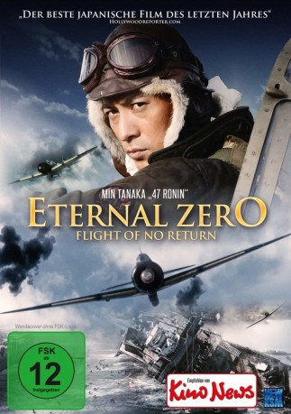
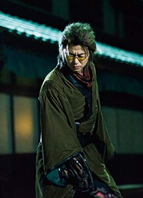
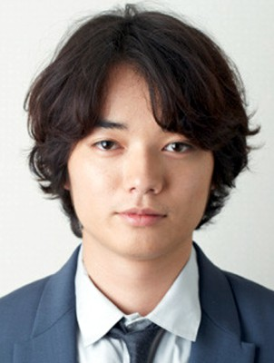
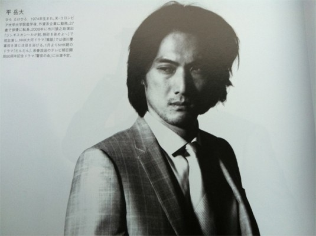

#9887 Eternal Zero - Flight of no Return
Alternativ: The Fighter Pilot (Englischer Titel)
 
 IMDB-Wertung: 7.3 / 10
IMDB-Wertung: 7.3 / 10  Metascore: 0
Metascore: 0 
Der 26-jährige Kentaro Saeki und seine Schwester Keiko sind erschrocken, als sie herausfinden, dass der Mann, den sie immer für ihren Großvater hielten, in Wahrheit nur der zweite Ehemann ihrer Oma gewesen ist. Ihr tatsächlicher Großvater war Kyuzo Miyabe, ein Kamikaze-Pilot während des Zweiten Weltkrieges. Die Geschwister wollen mehr über dessen Geschichte erfahren. Bei ihren Nachforschungen stoßen sie dann aber auf ein widersprüchliches Bild des Mannes, den sie nie persönlich kannten. So stehen sich zahlreiche Aussagen seiner ehemaligen Armeekameraden gegenüber, die nur in einem übereinstimmen: Zwar soll Kyuzo Miyabe ein außergewöhnlich talentierter Kämpfer gewesen sein, aber auch einer der größten Feiglinge, den sie kannten.
Jahr: 2013
Dauer: 143 Minuten
FSK: 12
Land: Japan Studio: New KSMTonspuren:
Untertitel: Deutsch,
Auflösung: 1080p (1920x808) Größe: 5867 MB
Genre: Action, Drama, Krieg, Mystery
Regisseur: Takashi Yamazaki
Drehbuch: Takashi Yamazaki, Tamio Hayashi, Naoki Hyakuta
Soundtrack: Naoki Satô
Darsteller:
- Haruma Miura als Kentarô Saeki
- Gaku Hamada als Isaki
-  Hirofumi Arai als Kageura
-  Shôta Sometani als Oishi
 Takahiro Miura als Takeda
Takahiro Miura als Takeda-  Takehiro Hira als
- Kisuke Iida als
- Bob Werley als Green (Talker)
- Yûki Furukawa als
 Min Tanaka als Old Kageura
Min Tanaka als Old Kageura- Mikijirô Hira als Crew member
 Isao Natsuyagi als Old Kenichiro
Isao Natsuyagi als Old Kenichiro- Motokatsu Suzuki als Navy Commander
- Jun'ichi Okada als Miyabe
- Mao Inoue als Matsuno
- Tatsuya Ueda als Koyama
- Ken Aoki als Ito
- Rakuto Tochihara als Teranishi
- Ippei Sasaki als
- Yûya Endô als Kagawa
- Tarô Suruga als
- Toshihiro Yashiba als
- Ryôhei Abe als
- Akio Nakadai als
- Shûichirô Masuda als
- Kazue Fukiishi als Keiko
- Jun Fubuki als Kiyoko
- Tomoko Saitô als
- Ozuno Nakamura als
- Naoto Itô als
- Chinami Suzuki als
- Miho Nakanishi als
- Nanase Iwai als
- Nanaka Yagi als
- Gaku Yamamoto als Old Takeda
- Isao Hashizume als Old Isaki
- Kyle Card als US Navy Solider
Datei: X:\HD-Eastern-Modern(A-M)\Eternal Zero - Flight of no Return (2013, FSK12, 1920x808).mkv seit 08.11.2018
Festplatte: HD Eastern+Western
 Es gibt insgesamt 104 Filme in der Gruppe 'HD-Eastern-Modern(A-M)'
Es gibt insgesamt 104 Filme in der Gruppe 'HD-Eastern-Modern(A-M)'